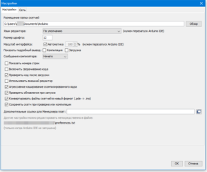

Прошивка esp8266 через Arduino IDE
ESP8266 – это популярный китайский микроконтроллер от компании Espressif, основным достоинством которого является встроенный интерфейс WiFi и совместимость с ардуино. Совместимость означает возможность писать программы и загружать их через Arduino IDE,ведь большинство скетчей могут с минимальными доработками использоваться в ESP8266. В этой статье мы узнаем, что из себя представляет стандартная прошивка ESP 8266, как можно программировать эти модули в привычной для многих ардуинщиков Arduino IDE. Мы узнаем, как подготовить среду программирования, как с ее помощью написать скетч и как затем подключить и прошить WiFi-модуль.
Содержание [скрыть]
Начальная прошивка ESP8266 с WiFi
Сегодня на базе чипа ESP8266 выпускается большое количество модулей, о них мы писали в отдельной статье, посвященной этому микроконтроллеру. Заводские ESP8266 идут со стандартной прошивкой от компании Espressif. Этот софт позволяет работать с модулем вай-фай как с обычным модемом, то есть посредством AT команд, которые подаются на последовательный порт. Таким образом, вы можете использовать модули «из коробки» как внешнее WiFi устройство (в зависимости от режима работы это может быть и точка доступа, и ретранслятор).
Но огромным преимуществом ESP8266 является возможность использовать его как микроконтроллер, подключая вешние устройства и программируя логику систему через прошивку. Вот об этом мы и поговорим.
Стандартная микропрограмма внутри ESP8266 не только ограничивает наши возможности, но и обладает определенными недостатками (к примеру, медленный интерфейс обмена данными с контроллером), что может быть критично для некоторых проектов. Если мы захотим использовать ESP8266 как полноценный контроллер, нам надо будет записать туда свою программу или интерпретатор, который будет выполнять поступающие из вне команды. Можно выделить несколько основных способов перепрошивки ESP8266:
Прошивка ESP 8266 в Arduino IDE
Почему для прошивки ESP 8266 многие предпочитают использовать Arduino IDE? Есть целый ряд причин, которые оправдывают использование именно данной среды разработки. Во-первых, она очень проста. Скетчи в Arduino IDE пишутся на языке, который в плане синтаксиса напоминает С/С++. Большинство функций, которые используются для программирования платы Ардуино, можно применять для написания прошивки к ESP8826 (к примеру, pinMode(), digitalRead() и пр.). Поэтому если вы писали скетчи для платы Arduino, то проблем с написание прошивки возникнуть не должно.
Во-вторых, Arduino IDE поддерживает множество различных библиотек, которые значительно облегчают процесс программирования. Некоторые из них можно использовать для того, чтобы писать прошивку для ESP8266. К примеру, при создании софта наверняка пригодятся такие модули, как:
И это лишь верхушка айсберга. У Arduino IDE есть еще несколько менее значимых преимуществ.
Чтобы использовать среду разработки Ардуино с ESP8266, для начала необходимо произвести предварительную настройку. Именно о ней мы сейчас и поговорим.
Для начала необходимо установить на свой ПК крайнюю версию среды Arduino IDE. Сделать это можно на официальном интернет-сайте. На момент написания статьи крайняя версия IDE – это 1.8.5. После загрузки и инсталляции среды разработки, необходимо запустить ее и перейди в раздел Файл > Настройки. Там есть поле для дополнительных ссылок менеджера плат. В него необходимо вписать http://arduino.esp8266.com/stable/package_esp8266com_index.json и клацнуть на кнопочку ОК.
Затем нужно перейти в Инструменты > Плата. Там будем представлен список доступных плат. Но на интересует пункт Менеджер плат. Это приведет к запуску нового диалога. В нем необходимо найти пункт под названием esp8266 by ESP8266 Community и кликнуть по нему. Вышеописанные манипуляции приведут к появлению кнопочки Установка. Нужно выбрать подходящую версию (лучше всего крайнюю). Далее надо нажать на кнопку, отвечающую за установку. После этого среда разработки начнет скачивать необходимые файлы. Это не займет много времени, так как нужный пакет весит всего 150 МБ.
Возвращаемся к списку плат. После инсталляции программного модуля там появилось несколько новых пунктов, которые соответствуют рассматриваемому микроконтроллеру. Надо выбрать вариант Generic ESP8266 Module. Затем следует определить входящий пункт, через уже знакомый раздел Инструменты. Там же следует задать параметры модуля (частота, объем flash-паммяти). На этом настройка программной среды завершена.
Для подключения ESP8266 не потребуется много коннекторов, так как рассматриваемый аппаратный модуль использует всего несколько пинов. Выходы TX/RX и землю нужно подключить к конвертору TTL-USB (его, в свою очередь, надо подключить к USB). Далее следует подсоединить питание в 3.3В к пину VCC.
Важно! Не стоит использовать питание от USB-TTL конвертера, так как это может привести к нестабильной работе аппаратного модуля. Лучше используйте внешний источник питания.
Чтобы иметь возможность загружать на микроконтроллер прошивку, необходимо подсоединить GPIO0 к земле. При таком подключении аппаратный модуль загружает прошивку во flash-память. Запуск программы происходит сразу же, без отсоединения от GPIO.
Важно! Перед загрузкой прошивки для ESP8266 необходимо перезагрузить модуль. Сделать это можно, передёрнув питание или же подав землю на RESET.
Последовательность действий при загрузке скетча
Процесс загрузки скетча элементарен. В самой программе необходимо заполнить SSID, а также указать пароль вай-фай. После этого следует клацнуть на кнопочку компиляции и загрузить скетч на устройство.
Важно! Если аппаратный модуль был подключен без автопрошивки, то надо отсоединить пин GPIO0 от земли и передернуть питание.
Далее следует перейти в Инструменты > Монитор последовательного порта. Надо выбрать скорость 115200. После этого стоит обратить внимание на терминал. Если модуль подключен к сети, то в таком случае на мониторе должны появится соответствующие надписи. Внизу будет расположен IP адрес аппаратного модуля.